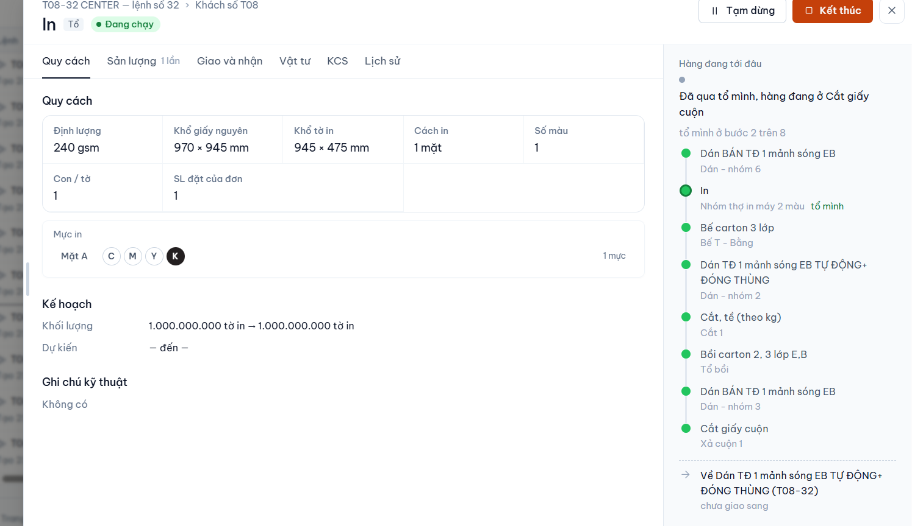
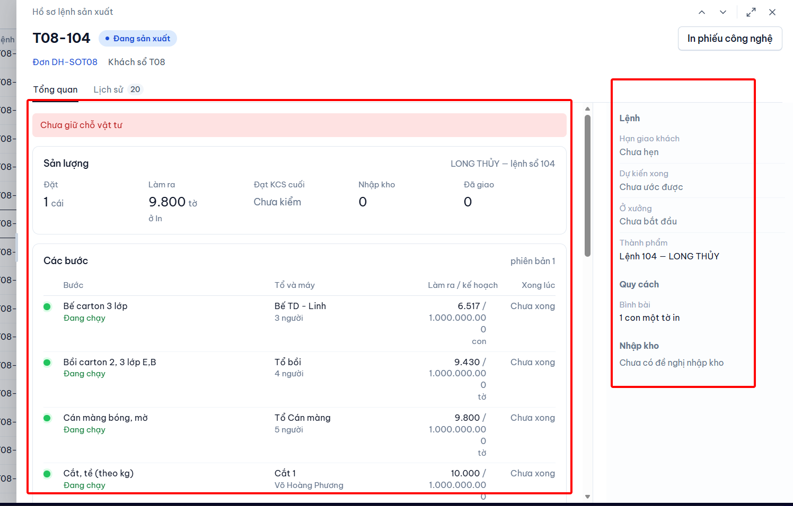

Hồ sơ lệnh sản xuất: làm lại tab Tổng quan
Ba phương án cho hai vùng bạn khoanh (thân tab và cột phải). Cả ba đều chép khuôn ngăn Việc của tổ: lưới ô đóng khung cho quy cách và số, cột phải "Hàng đang tới đâu" vẽ các bước dọc có chấm. Khác nhau ở chỗ đặt các bước và có tách tab hay không. Chưa đụng code app.
Đã đọc gì trước khi vẽ
frontend/src/pages/LenhSxNgan.tsx: khốitongQuan(băng vướng, thẻ Sản lượng, bảng Các bước 5 cột cuộn ngang) và khốicotở cột phải (Lệnh, Quy cách, Nhập kho, Sự cố). Kiểu dữ liệuLenhSxNganOut,LenhSxThongSo,LenhSxRoutingNodetrongapi/client.ts.- Khuôn cần chép:
thsx/ThsxCotPhai.tsx(khối Hàng đang tới đâu, chấmthsx-b-vs, ô đuôi về kho) vàThsxQuyCach.tsx(lưới ô quy cách, hàng mực in). - Bản đã chọn ngày 12/10:
ho-so-lenh-san-xuat-3-phuong-an.html(phương án A: routing dọc, bỏ số vào/ra từng bước, bỏ phiên bản). Bản đang chạy đã trôi khỏi bản đó: có lại bảng số từng bước và chữ "phiên bản 1".
Bản hiện tại chán ở đâu (đọc từ ảnh bạn khoanh)
- Băng hồng "Chưa giữ chỗ vật tư" chiếm nguyên một hàng to ở đầu, trong khi luật đã chốt là bỏ hẳn nền hồng.
- Cột "Làm ra / kế hoạch" chỉ rộng 104px, nên số kế hoạch 1.000.000.000 gãy thành ba dòng, và đơn vị rơi xuống dòng thứ tư.
- Thân tab có thanh cuộn riêng, bảng các bước lại cuộn ngang lần nữa. Trong khi đó cột phải rộng mà gần như chỉ có chữ xám ("Chưa hẹn", "Chưa ước được", "Chưa bắt đầu").
- "LONG THỦY — lệnh số 104" nói hai lần: ở đầu thẻ Sản lượng và ở mục Thành phẩm bên phải.
- Các bước là bảng chữ, không thấy hàng đang tới bước nào. Ngăn Việc của tổ trả lời câu đó bằng dải chấm dọc.
- Lỗi dữ liệu, không phải lỗi bố cục: lệnh có 4 bước "Đang chạy" mà mục "Ở xưởng" vẫn ghi "Chưa bắt đầu". Mốc này đang đọc sự kiện
bat_dautrong nhật ký, lệnh này không có sự kiện đó. Nên sửa cùng lúc, dù bạn chọn phương án nào.
Tham khảo
Bốn ảnh Pinterest đã lưu từ đợt Theo dõi SX, cùng nghiệp vụ "đơn đang tới đâu". Lần tìm Pinterest mới hôm nay trả về chủ yếu màn danh sách, không có màn chi tiết nào hợp hơn, nên tôi không thêm ảnh.




Số liệu trong mockup
- Lấy từ ảnh T08-104: mã, đơn, khách, thành phẩm, 5 số sản lượng, 4 bước đang chạy (tổ, số người, số làm ra), kế hoạch 1.000.000.000.
- Giả định: thứ tự các bước và bước In cuối (thẻ Sản lượng ghi "ở In" nên In là bước cuối); quy cách giấy và mực mượn của lệnh T08-32 trong ảnh thứ hai; mọi giờ (ở xưởng từ 08:10 20/10, giờ từng bước) và số "Giấy cần 10.000" là số bịa để thấy chỗ đặt.
A. Như Việc của tổ: số và quy cách ở giữa, các bước dọc ở cột phải
Bám sát ảnh bạn gửi. Thân tab chỉ còn ô số: một hàng mốc nhỏ (hạn giao, dự kiến xong, ở xưởng), lưới Sản lượng, lưới Quy cách. Các bước dọn hết sang cột phải thành dải chấm. Số làm ra/kế hoạch của mỗi bước nằm thành một dòng bên phải tên bước, không bao giờ gãy. Câu vướng thành một chip vàng nhỏ. Không còn thanh cuộn nào bên trong.
- Cắt, tề (theo kg)Cắt 110.000 / 1 tỷ tờ
- Cán màng bóng, mờTổ Cán màng9.800 / 1 tỷ tờ
- Bồi carton 2, 3 lớp E,BTổ bồi9.430 / 1 tỷ tờ
- Bế carton 3 lớpBế TD - Linh6.517 / 1 tỷ con
- InNhóm thợ in máy 2 màu9.800 / 1 tỷ tờ
chưa có đề nghị nhập kho
Số to rút gọn: kế hoạch 1.000.000.000 hiện là "1 tỷ"; rê chuột vào thì ra đủ số. Từ 10.000 trở xuống vẫn in đủ. Bỏ khỏi tab: chữ "phiên bản 1", tên người đứng máy, cột Xong lúc. Giờ xong của từng bước xem ở tab Lịch sử.
B. Một câu trạng thái to, các bước thành dòng thời gian ở giữa
Theo Pinterest p3/p6. Đầu thân tab trả lời ngay "lệnh đang ở đâu" bằng một câu và một thanh tiến độ. Dưới là các bước dạng dòng thời gian: giờ ở trái, tên và tổ ở giữa, số làm ra/kế hoạch ở phải, rộng đủ để không gãy. Cột phải gom thông tin đứng yên: Lệnh (hạn, thành phẩm), Quy cách dạng lưới 2 cột kiểu Việc của tổ, Nhập kho.
- 14:20 21/10xongCắt, tề (theo kg)Cắt 1, Võ Hoàng Phương10.000 / 1 tỷtờ
- từ 08:10 22/10đang chạyCán màng bóng, mờTổ Cán màng, 5 người9.800 / 1 tỷtờ
- từ 09:30 22/10đang chạyBồi carton 2, 3 lớp E,BTổ bồi, 4 người9.430 / 1 tỷtờ
- từ 13:00 22/10đang chạyBế carton 3 lớpBế TD - Linh, 3 người6.517 / 1 tỷcon
- từ 15:40 22/10đang chạyInNhóm thợ in máy 2 màu9.800 / 1 tỷtờ
- Hạn giao khách
- Chưa hẹn
- Dự kiến xong
- Chưa ước được
- Ở xưởng
- từ 08:10 20/10
Đổi so với hiện tại: thẻ 5 số Sản lượng gộp thành một câu dưới thanh tiến độ. Đây là chỗ B khác A nhiều nhất: gọn hơn, nhưng mất ô số to để liếc. Bỏ chữ "phiên bản 1". Giờ ở cột trái lấy từ hoan_thanh_luc hoặc lúc bắt đầu của bước, máy chủ đang có sẵn.
C. Tách tab như Việc của tổ, cột phải luôn là Hàng đang tới đâu
Giống ngăn Việc của tổ cả cách chia tab: Quy cách, Sản lượng, Kho và giao, Lịch sử. Cột phải đứng yên, luôn là dải chấm các bước, đổi tab không mất. Mỗi tab ngắn, không phải cuộn. Hai khung dưới vẽ tab Quy cách và tab Sản lượng.
- Cắt, tề (theo kg)Cắt 1
- Cán màng bóng, mờTổ Cán màng
- Bồi carton 2, 3 lớp E,BTổ bồi
- Bế carton 3 lớpBế TD - Linh
- InNhóm thợ in máy 2 màu
chưa có đề nghị nhập kho
Tab Sản lượng của phương án C. Cột phải vẫn y như trên, nên khung này chỉ vẽ thân tab.
- 14:20 21/10xongCắt, tề (theo kg)Cắt 1, Võ Hoàng Phương10.000 / 1 tỷtờ
- từ 08:10 22/10đang chạyCán màng bóng, mờTổ Cán màng, 5 người9.800 / 1 tỷtờ
- từ 09:30 22/10đang chạyBồi carton 2, 3 lớp E,BTổ bồi, 4 người9.430 / 1 tỷtờ
- từ 13:00 22/10đang chạyBế carton 3 lớpBế TD - Linh, 3 người6.517 / 1 tỷcon
- từ 15:40 22/10đang chạyInNhóm thợ in máy 2 màu9.800 / 1 tỷtờ
Đổi so với hiện tại: bỏ tab Tổng quan, tách thành Quy cách / Sản lượng / Kho và giao. Mục Nhập kho và Sự cố ở cột phải cũ dời sang tab Kho và giao. Người quen ngăn Việc của tổ mở ra thấy cùng một chỗ, nhưng muốn xem số phải bấm thêm một tab.
Gợi ý của tôi
- A nếu ngăn này chủ yếu để liếc: mở ra thấy ngay số, quy cách và hàng đang ở bước nào, không phải bấm. Đây là phương án gần ảnh bạn gửi nhất mà vẫn một màn.
- Cả ba đều sửa chung mấy lỗi: bỏ băng hồng, số không gãy dòng, bỏ thanh cuộn trong, không nói tên thành phẩm hai lần. Lỗi "Ở xưởng: Chưa bắt đầu" là lỗi đọc mốc, sửa riêng.